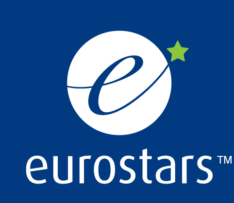
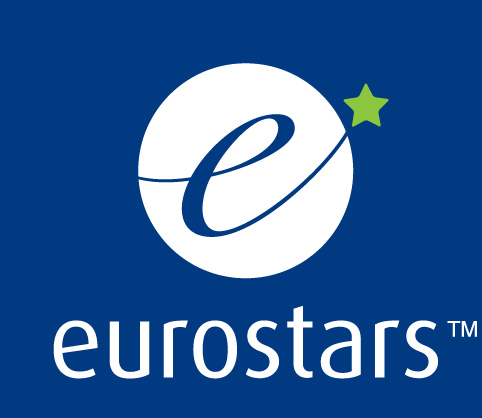

×
Terms of Use
1. Liability and Warranty
This website is provided as a courtesy of the ASPIRE consortium. While we have endeavoured to provide helpful information, nothing herein is intended as an offer for sale, representation, or warranty unless otherwise noted. If you believe that you may be interested in our products or services, or in knowing more about us, please do not hesitate to contact us.
The information on this web site is provided “as is”, without warranty of any kind, either express or implied, including, but not limited to, the implied warranties of merchantability, fitness for a particular purpose, or non-infringement. Some jurisdictions do not allow the exclusion of implied warranties, so that particular exclusion may not apply to you.
In no event shall the ASPIRE consortium be liable for any damages whatsoever, including, without limitation, special, indirect, consequential, or incidental damages, or damages for lost profits, loss of revenue, or loss of use, arising out of or related to the use or reliance on this web site or the information contained in it. This shall apply whether such damages arise (or are alleged to arise) in contract, negligence, tort, under statute, in equity, at law or otherwise.
We shall not be liable for any errors or omissions contained on this web site, and reserve the right to make changes without notice. Again, all information is provided “AS IS.”
We make no representations whatsoever about any other web site which you may access through this one. When you access a non-ASPIRE web site, please understand that it is independent from us, and that we have no control over the content on that web site. In addition, a link to a non-ASPIRE web site does not mean that we endorse or accept any responsibility for the content, or the use, of such website.
2. Ownership of Materials
This website, including layout and graphics, is a copyrighted work and is protected by worldwide copyright laws and treaties. You may not repost or reproduce this work, prepare derivative works based on this work, distribute copies of this work to the public by sale or other transfer of ownership, or by rental, lease or lending, perform or display this work publicly, or otherwise commercially exploit this work. However, you may view, download, and reprint copies of the work provided that (a) a notice in the form:
“Copyright © 2020 by ASPIRE consortium. A project co-founded by the German Federal Ministry of Education and Research, EUREKA member countries, and the European Union Horizon 2020 Framework Programme, called “Arterial spin labelling Scanner- and Patient-Independent Robust diagnostic Evaluation” under the contract number 01QE2026A. All rights reserved.”
appears in all copies, (b) use of copies is for informational, non-commercial, and personal use only and is not be copied or posted on any network computer or broadcast in any media, (c) no modifications are made to the copied work. If you wish to make more extensive or other uses of this work (or portions thereof), you must have our express written permission. Please contact us if you wish to pursue this further.
3. Copyright & Trademark Information
Note that any product, process, or technology described on this website may be the subject of other Intellectual Property rights reserved by the members of the ASPIRE consortium and are not licensed hereunder. Except as expressly provided herein, we do not grant to you by virtue of this website or the statements contained herein any express or implied right under any of those Intellectual Property rights.


![[BMBF icon]](./images/official/BMBF_gefoerdert_2017_en.jpg) 
